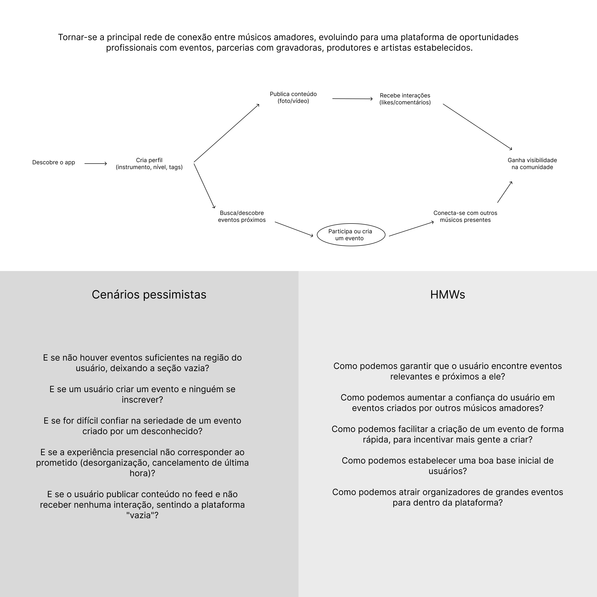
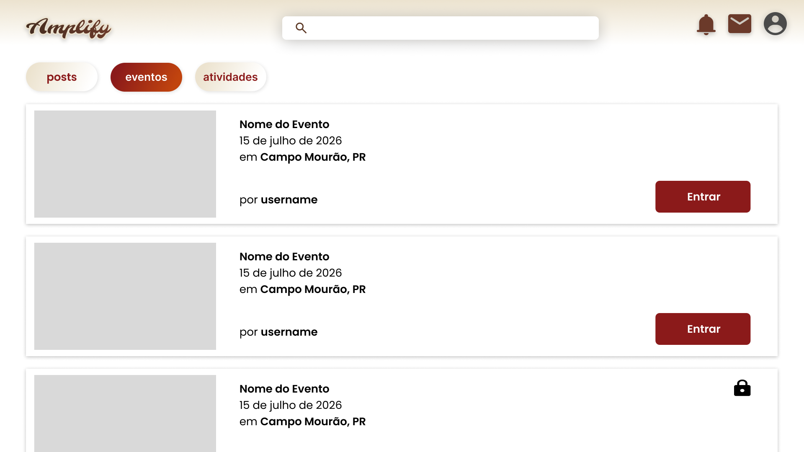
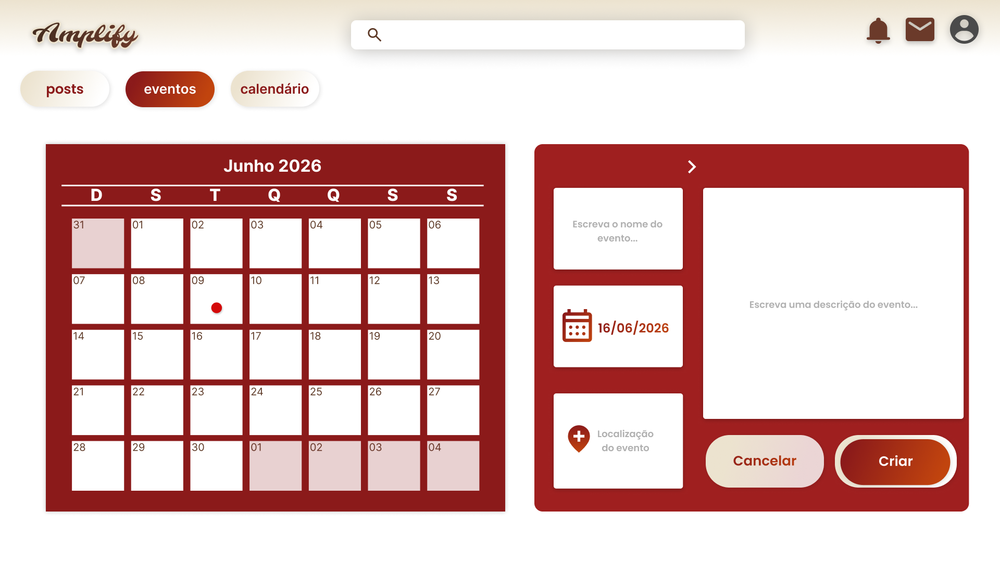
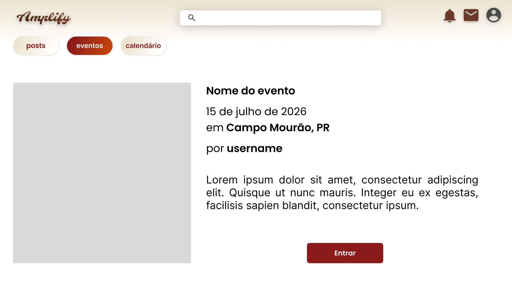
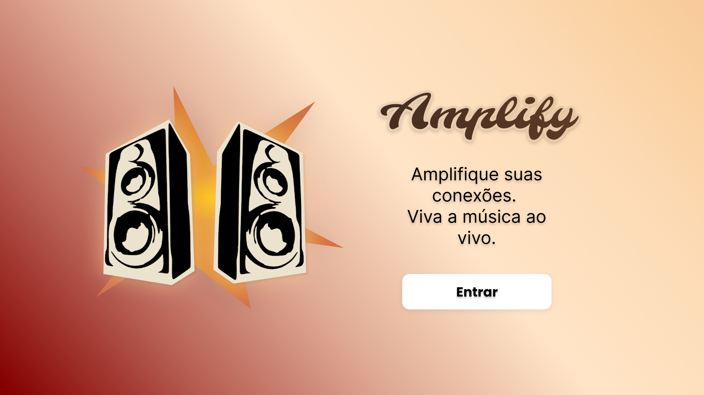
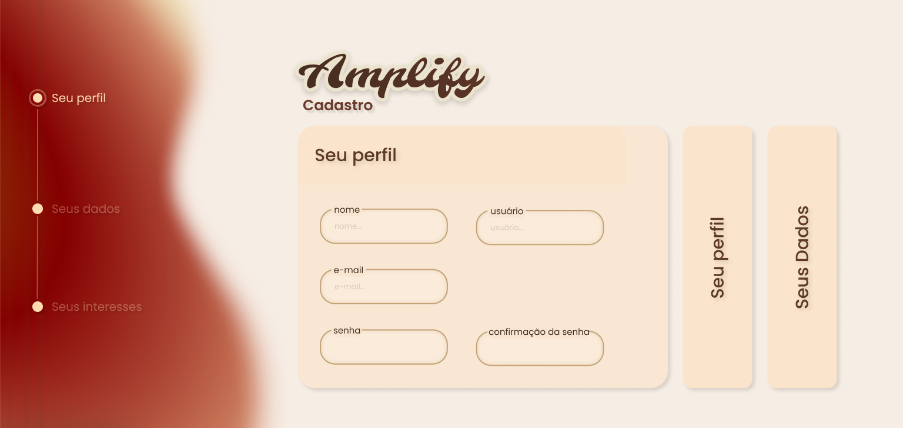
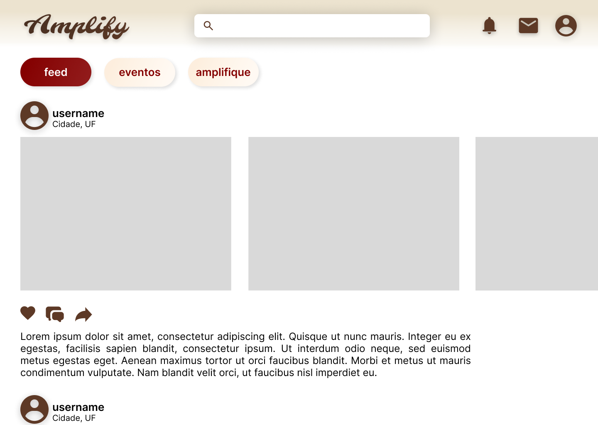
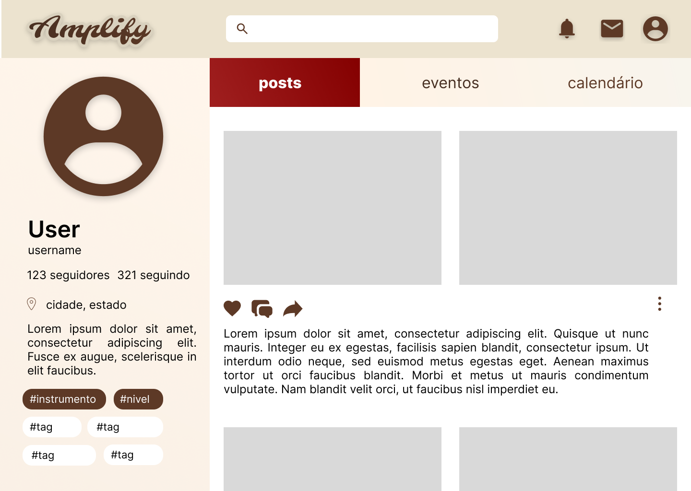
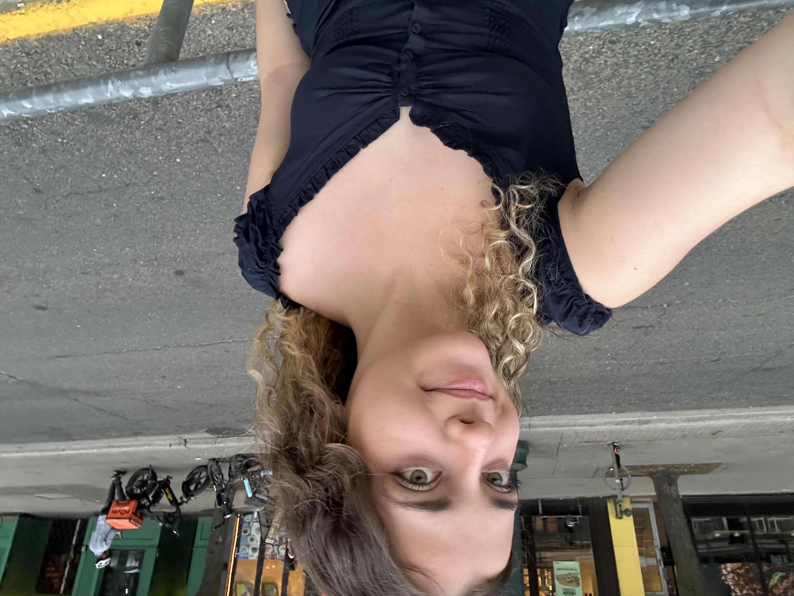

Design Sprint
Mapa Usuário → Objetivo

Objetivo de longo prazo, cenários pessimistas, HMWs e foco do sprint.
Esboços das soluções votadas
Três soluções foram votadas pelo grupo como prioritárias para o fluxo de eventos:

Listagem de eventos — permite ao usuário descobrir eventos próximos de forma rápida.

Criação de evento — fluxo simplificado para incentivar mais usuários a organizarem eventos.

Detalhes do evento — informações claras e botão de participação em destaque.
Storyboard
A jornada de João, um músico amador, usando o Amplify para encontrar eventos e expandir sua rede:

1. João descobre o Amplify e a proposta da plataforma.

2. Ele cria seu perfil, com instrumento e interesses.

3. Explora eventos musicais próximos a ele.

4. Encontra um evento e decide participar.

5. Após o evento, publica fotos no feed.

6. Expande sua rede de contatos musicais.
Protótipo
Equipe
Eduardo Boaro
Eduardo da Silva
Izabelly Bartolini
José Vinicius Grecco

Juliana Carvalho